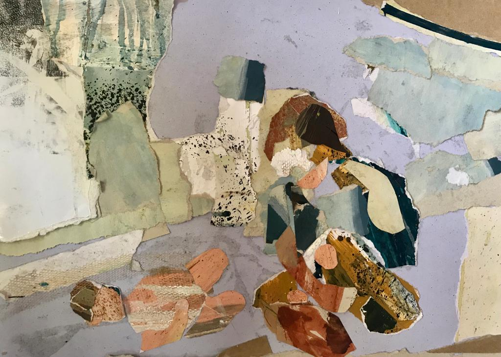
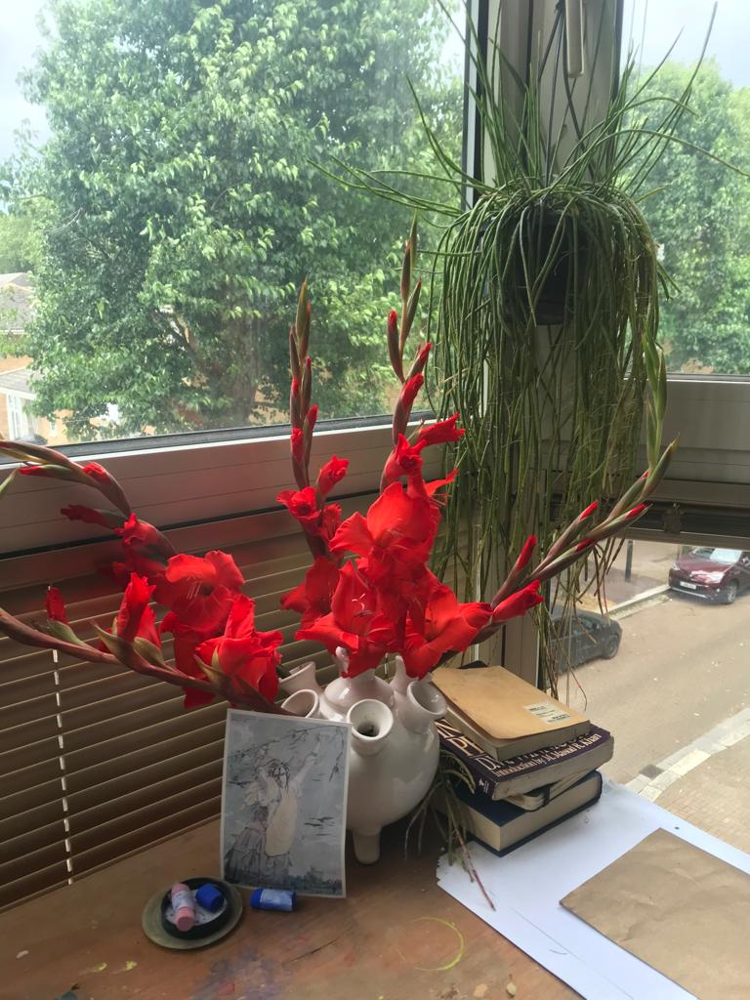

Katy Cotterell
Art Psychotherapist
I am an Art Psychotherapist registered with the HCPC. I am also a member of the British Association of Art Therapists. As an Art Psychotherapist, my training emphasises art-making as an integral non-verbal part of the therapeutic process. Art is used as a medium to address and work through emotional difficulties, which may be confusing or distressing, and at times too difficult to put into words.
Art therapy is a form of psychotherapy that uses art media as its primary mode of expression and communication. My approach makes space for unconscious communications which can be contained within artmaking alongside the therapeutic relationship.
This often includes working sensitively with emerging themes in sessions, although I am able to take a more directive or side-by-side-approach depending on the presenting needs. I offer sessions from Caya Therapy's purpose built art room, which I believe holds the potential for more in depth creative exploration within sessions. There is no expectation of artistic skills or experience.
My previous training and work has included working with adults in acute and community settings. I also have ongoing experience in working therapeutically with children and young people with complex difficulties including attachment difficulties, bereavement, behaviour challenges, ADHD and Autism. This has included supporting people with varied access requirements and complex needs associated with disability, and illness. I therefore also work with the recognition that social, political and cultural conditions shape lives and can have a disproportionate impact on emotional wellbeing.
Alongside my private practice I work part-time as part of a Creative Therapies team delivering 1-2-1 sessions for young people in schools. I am particularly passionate about promoting a culture of early invention and holding space for emotional literacy and psychoeducation. I believe this is equally important when working with adults.
My practice is underpinned by the principles of psychodynamic psychotherapy, integrating a dynamic, person-centred and trauma-informed approach. I work with a high degree of relational sensitivity and believe the experience of feeling heard and understood can be an important first step in making sense of our experiences.